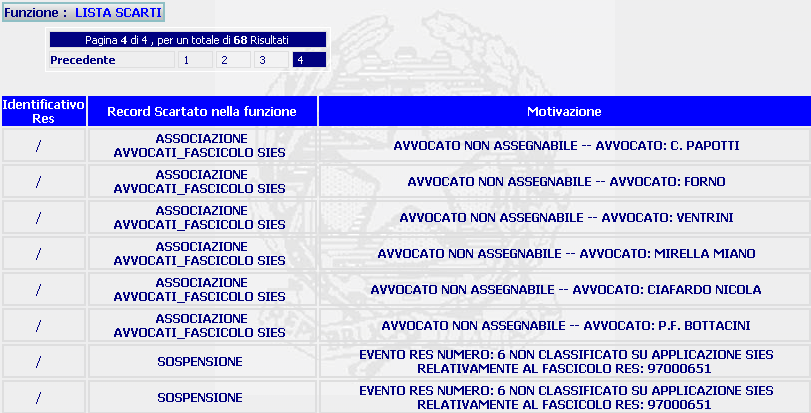

GENERALITA'
LISTA SCARTI: La funzione, consente di visualizzare la lista dei record scartati e relativa motivazione, durante le operazioni di migrazione dati.
LE MASCHERE VIDEO
La funzione in esame viene realizzata attraverso l'utilizzo della seguente maschera che riporta gli elementi descrittivi dei record scartati:

COME FARE PER ...
Per visualizzare,se presente, un'altra pagina occorre:
| digitare sul numero della pagina se ci si vuole posizionare su una pagina precisa; | |
| cliccare su "Precedente" se ci si vuole posizionare sulla pagina precedente | |
| cliccare su "Successiva" se ci si vuole posizionare sulla pagina Successiva |

CAMPI
Nella maschera non sono presenti campi digitabili.
PULSANTI
Oltre ai
pulsanti orizzontali della maschera principale
è
presente il pulsante
 facente parte dei
pulsanti di uso
comune
,
facente parte dei
pulsanti di uso
comune
,